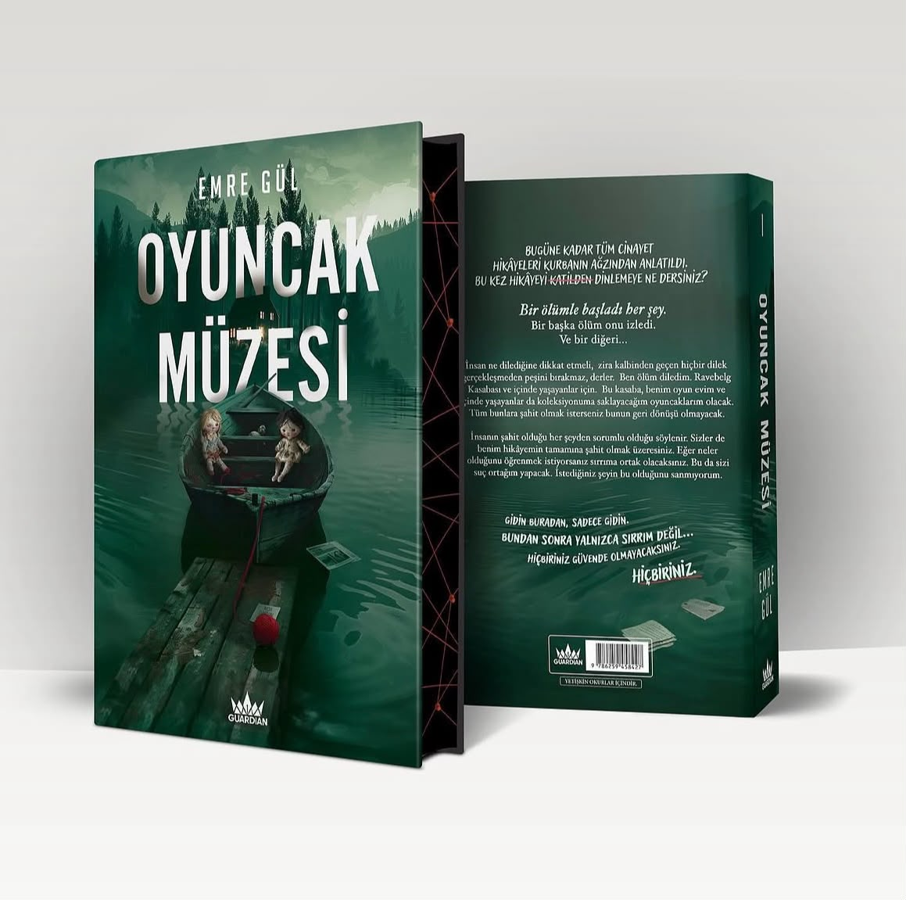

BUGÜNE KADAR TÜM CİNAYET HİKÂYELERİ KURBANIN AĞZINDAN ANLATILDI. BU KEZ HİKÂYEYİ KATİLDEN DİNLEMEYE NE DERSİNİZ?
Bir ölümle başladı her şey. Bir başka ölüm onu izledi. Ve bir diğeri...
İnsan ne dilediğine dikkat etmeli, zira kalbinden geçen hiçbir dilek gerçekleşmeden peşini bırakmaz, derler. Ben ölüm diledim. Ravebelg Kasabası ve içinde yaşayanlar için. Bu kasaba, benim oyun evim ve içinde yaşayanlar da koleksiyonuma saklayacağım oyuncaklarım olacak. Tüm bunlara şahit olmak isterseniz bunun geri dönüşü olmayacak.
İnsanın şahit olduğu her şeyden sorumlu olduğu söylenir. Sizler de benim hikâyemin tamamına şahit olmak üzeresiniz. Eğer neler olduğunu öğrenmek istiyorsanız sırrıma ortak olacaksınız. Bu da sizi suç ortağım yapacak. İstediğiniz şeyin bu olduğunu sanmıyorum.
GİDİN BURADAN, SADECE GİDİN.
BUNDAN SONRA YALNIZCA SIRRIM DEĞİL... HİÇBİRİNİZ GÜVENDE OLMAYACAKSINIZ. HİÇBİRİNİZ.